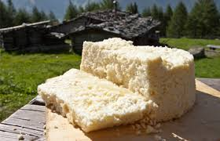
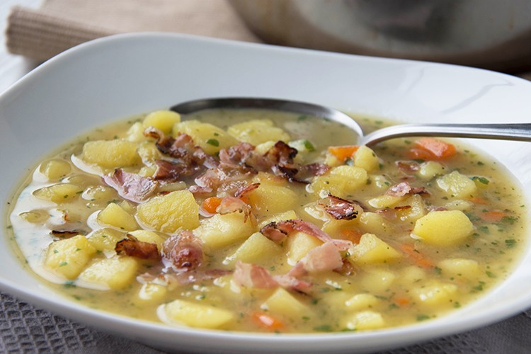
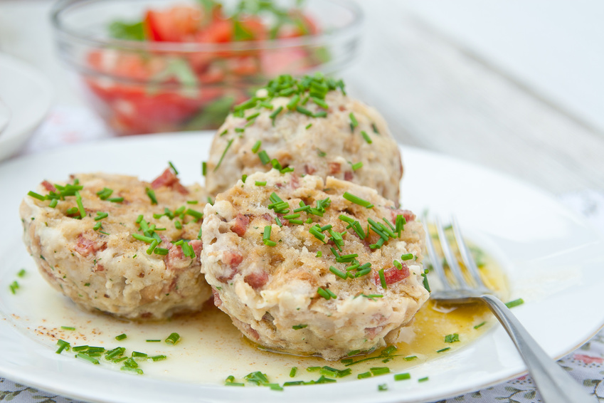
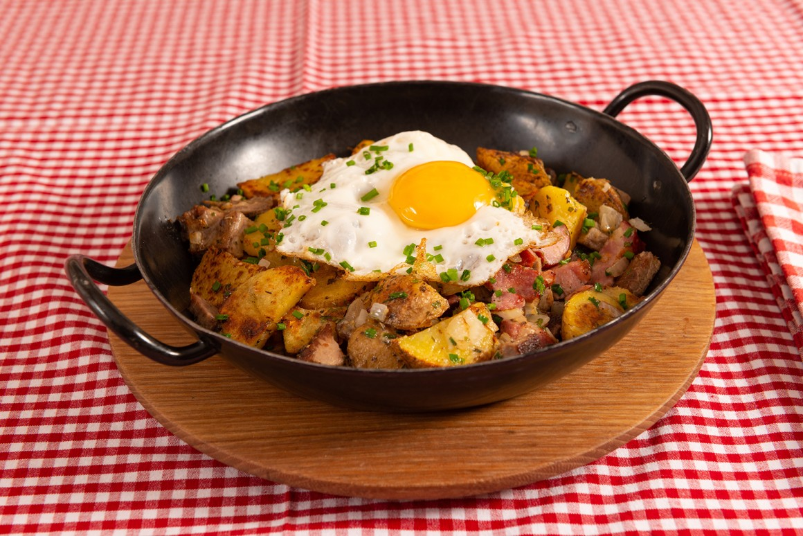
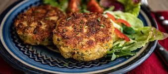
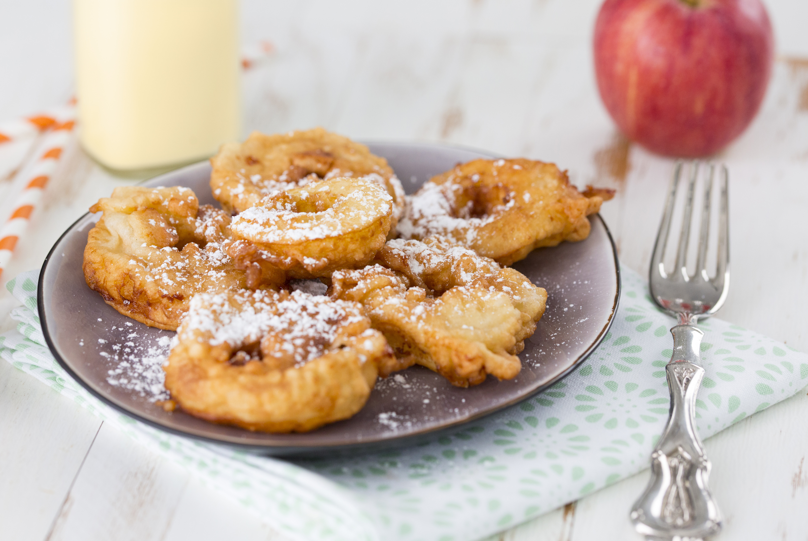
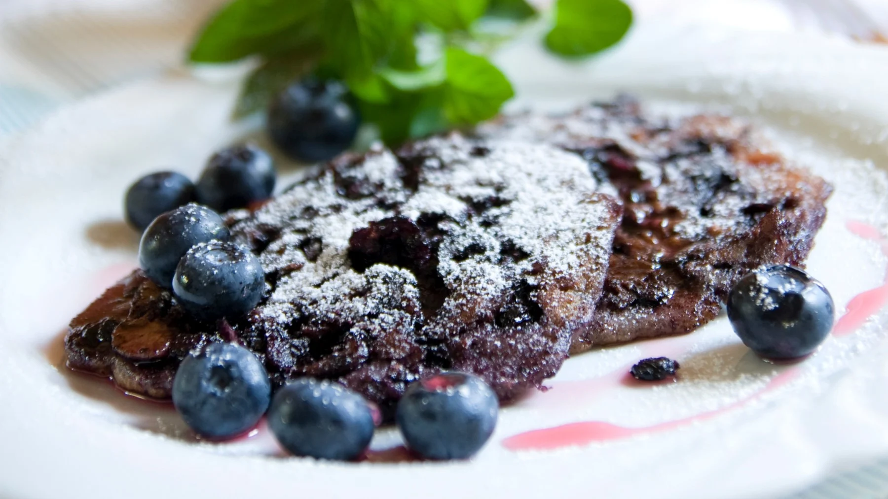
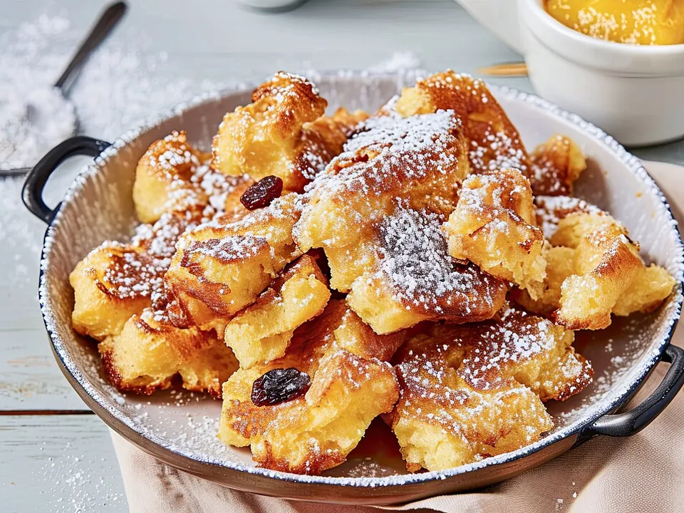
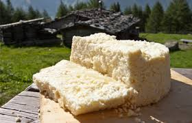

Käse
Graukas
Ein magerer Rohkäse, der entweder topfig oder speckig ist.
Tiroler Adler
Ein würziger Bergkäse mit einem leicht parmesanartigen Teig, der während seiner 7-monatigen Reifezeit eine besondere Würze und Textur entwickelt.

Sie ist perfekt für kältere Monate und besteht aus Kartoffeln, Zwiebeln, Karotten und Lauch, gekocht in einer Brühe und verfeinert mit Sahne und Tiroler Speck.
Traditionellerweise werden die Knödel mit in einer Suppe serviert – manche bevorzugen sie aber mit Sauerkraut oder Salat.
Bratkartoffeln mit Speck und Zwiebeln, oft mit Spiegelei serviert.
Die flach gepressten und in Fett gebackenen Knödel mit Grau- oder Bergkäse sind beliebter Bestandteil der Tiroler Küche. Serviert werden sie entweder mit einer kräftigen Suppe oder Salat.
Apfelscheiben die im Teigmantel in Fett herausgebacken und mit Staubzucker oder Vanillesauce serviert werden.
Nocken aus einem Teig mit Heidelbeeren werden in der Pfanne braun gebraten und mit Staubzucker bestreut.
Der Kaiserschmarren ist eine beliebte Süßspeise, ein fluffig-lockerer Palatschinkenteig, zerrissen und meist mit Staubzucker bestreut sowie Zwetschkenröster serviert.
Ein magerer Rohkäse, der entweder topfig oder speckig ist.
Ein würziger Bergkäse mit einem leicht parmesanartigen Teig, der während seiner 7-monatigen Reifezeit eine besondere Würze und Textur entwickelt.